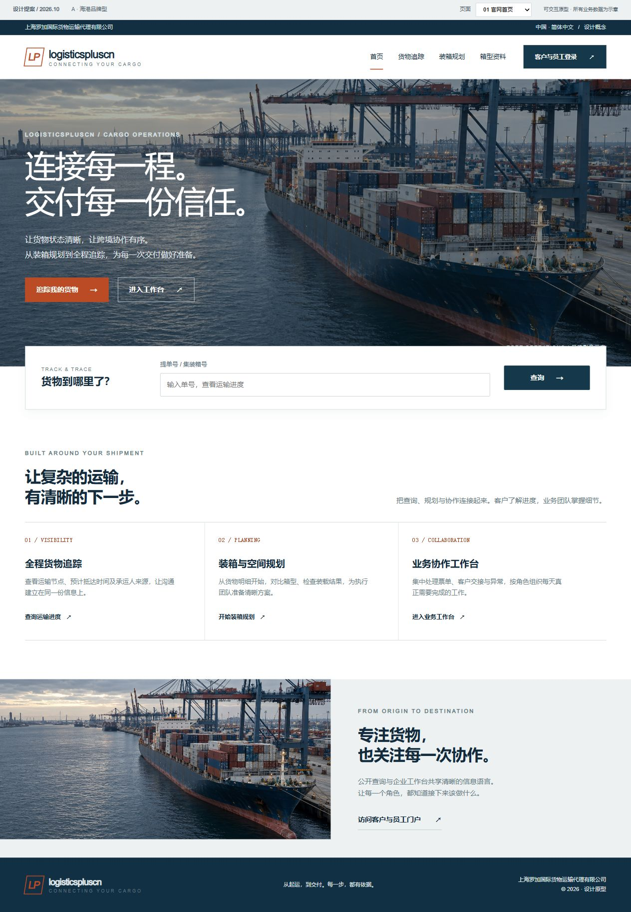

A MORE DISTINCTIVE LOGISTICS PLATFORM
让专业物流，
拥有自己的界面语言。
以真实的港航氛围、清晰的业务入口和克制的视觉层级，重新组织官网与工作空间。三种品牌方向，一套可以继续落地的页面原型。
3 个视觉方向9 个页面原型桌面与移动布局可点击交互
01 选择品牌气质
THREE DIRECTIONS02 浏览完整页面
DIRECTION A / INTERACTIVE PROTOTYPES03 技术基础与落地
REPOSITORY REVIEW前端、业务后端与追踪服务已经分开，模块注册与路由组织为继续扩展提供了基础。
部分大型组件仍承载较多职责。视觉更新可分页面推进，同时逐步收敛公共组件与样式。
本次 typecheck 发现 1 处错误。当前结论来自代码抽样与局部检查，不代表全量质量验收。
原型中的业务数据均为演示。技术结论、已知限制与落地顺序请查看配套文档。查看技术报告与设计说明